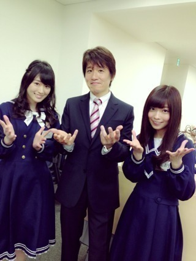
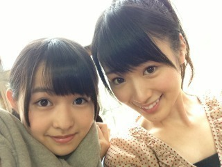

2013/0521Tueいつやるか、今で しょ！
おひさ♪♪
いつも沢山の応援
ありがとうございます( ∩ˇωˇ∩)
6thシングルに向けて
毎日忙しいでございます(^◇^;)
高山は原因不明の皮膚のただれに
悩まされてる...
でも大丈夫です(｀･ω･´)b
頑張ります！！！
前回の乃木どこで
2期生のお披露目( ´ ▽ ` )
かりんちゃんが2期生として
入ってきた時はびっくりしました！
いっぱい書きたいけど
また、後日書きますね♪♪
では今から撮影頑張ります！
みんなは毎日楽しんで...

いつ頑張るか、今でしょ！！！
林先生、
ありがとうございました(σ´∀｀)σ
ではまたのん♪♪♪

2013/05/21 16:48
コメント(551)
今でしょ！(笑)
がんばて
かわいい！
今でしょ！の手つきが違うよ！w
まりっかかわいいな
まりっかかわいいな
乃木どこ見ましたよ‼
ちゃんと名前覚えてるなんてかずみん凄すぎです‼
ちゃんと名前覚えてるなんてかずみん凄すぎです‼
お仕事お疲れ様です(*^^*)
原因不明の皮膚のただれ…
かずみん大丈夫？？
心配です( ; ゜Д゜)
6thめっちゃ楽しみです(*^▽^)/
では、
撮影頑張って下さいヽ(￣▽￣)ノ
かずみんお疲れ！！
いつもとブログのタイトルが違うね！笑
6thの制作もう始まってるんだ！！
体調に気をつけて頑張って(^o^)/
今日はこの辺で！！
またコメントします(*^o^*)
いつもとブログのタイトルが違うね！笑
6thの制作もう始まってるんだ！！
体調に気をつけて頑張って(^o^)/
今日はこの辺で！！
またコメントします(*^o^*)
こんばんはかまっちゃん(((^_^;)
かずみん今週ダービーだよ♪予想してる？
買えないか(´ω｀)
次のシングルどんな感じかな、楽しみやー(｀´)
かずみん今週ダービーだよ♪予想してる？
買えないか(´ω｀)
次のシングルどんな感じかな、楽しみやー(｀´)
かずみんを慕っている二期生のかりんちゃんの面倒を見てやってね
かずみんヤッホー(o・・o)/
原因不明って大丈夫か！Σ（￣□￣;）
今でしょ！
情熱大陸に映ってたなぁ、、、
それと違うんかな？わかんね(笑)
まりかやまりか!?
まりかかわゆい←
まーりかまーりかまりかまーりか♪
まっちゅんどこー？(笑)
ほなねﾉｼ
原因不明って大丈夫か！Σ（￣□￣;）
今でしょ！
情熱大陸に映ってたなぁ、、、
それと違うんかな？わかんね(笑)
まりかやまりか!?
まりかかわゆい←
まーりかまーりかまりかまーりか♪
まっちゅんどこー？(笑)
ほなねﾉｼ
おっ、じんちゅーず(*^_^*)
じぇんぬです。
原因不明の皮膚のただれ(ﾟoﾟ;
治すなら今でしょ(笑)
お大事にぃ～(^_-)
じぇんぬです。
原因不明の皮膚のただれ(ﾟoﾟ;
治すなら今でしょ(笑)
お大事にぃ～(^_-)
いつやるの？今でしょ！あー今だった！あー今だったのに！もう通り過ぎちゃった！今は巻き戻せない！あー残念！あー残念だ
あっ、お水飲んでください。
あっ、お水飲んでください。
かずみんこんにちはー


昨日は 日お疲れ様
日お疲れ様

最近は th
th シングル発売に向けて
シングル発売に向けて
いろいろ忙しそうですねー

 季節の変わり目
季節の変わり目 で体調も
で体調も
 崩れやすい
崩れやすい と思うけど
と思うけど
負けずに 頑張ってください
頑張ってください

では今日はここら辺で
今日もあと少し頑張りましょう
たーちゃんより
昨日は
最近は
負けずに
では今日は
今日もあと少し
たーちゃんより
大丈夫かい？
体調管理を確りとね！
早く治ると良いね！
体調管理を確りとね！
早く治ると良いね！
６枚目楽しみだよー！
bay
bay
お疲れ様です
2期生の乃木どこまだ見てないんですよ(°_°)
家帰ったらチェックしなきゃ
最近忙しくてなかなか手が回らない事が多い…
でもいつ頑張るのか？
今でしょ！
だと信じて頑張ります！
短いですがここら辺で！
まりっかとの2ショット良いですね(￣▽￣)
2期生の乃木どこまだ見てないんですよ(°_°)
家帰ったらチェックしなきゃ
最近忙しくてなかなか手が回らない事が多い…
でもいつ頑張るのか？
今でしょ！
だと信じて頑張ります！
短いですがここら辺で！
まりっかとの2ショット良いですね(￣▽￣)
かずみんおはよー♪
皮膚科行こう(>_<)
酷くならないうちにね(｀･ω･´)
6th制作頑張ってね(￣∇￣)
皮膚科行こう(>_<)
酷くならないうちにね(｀･ω･´)
6th制作頑張ってね(￣∇￣)
皮膚大丈夫か(´・ω・｀)
かずみんファイト～
かずみん大丈夫？
早く治してねー！
握手会当選したよー♪
会うの楽しみにしてるよ！
じゃあ撮影頑張ってね！
じゃあねー(^^)/
早く治してねー！
握手会当選したよー♪
会うの楽しみにしてるよ！
じゃあ撮影頑張ってね！
じゃあねー(^^)/
いつ大阪公演申し込むのか・・・今でしょ！(笑)
大阪取れたんで東京に引き続き行きます！
かずみんお疲れ様です!
じんましんかな？
体には気をつけて！
次のシングル楽しみにしてます
ばいっっっ
大阪取れたんで東京に引き続き行きます！
かずみんお疲れ様です!
じんましんかな？
体には気をつけて！
次のシングル楽しみにしてます
ばいっっっ
かずみん、こんばんわ こないだの”乃木どこ”見ましたよ。伊藤かりんちゃん、かずみん推しだったんですねー。握手会でいつも会ってた人がメンバーになるなんてなんか不思議な感じじゃないですか？あ、朝日新聞デジタルのインタビュー見ましたよ。ちょうど同じ時期に放送されてた情熱大陸にもちらっと出てましたね。それも見ました。お肌大丈夫？暑いし、大変だよね。
こないだの”乃木どこ”見ましたよ。伊藤かりんちゃん、かずみん推しだったんですねー。握手会でいつも会ってた人がメンバーになるなんてなんか不思議な感じじゃないですか？あ、朝日新聞デジタルのインタビュー見ましたよ。ちょうど同じ時期に放送されてた情熱大陸にもちらっと出てましたね。それも見ました。お肌大丈夫？暑いし、大変だよね。

 じゃあ、頑張ってね。
じゃあ、頑張ってね。
林せんせーやー(笑)
おれ東進やったからお世話に
なってました(笑)
夢で会おうぜアディオス
(*´ω｀*)(*´ω｀*)(*´ω｀*)
大好きo(｀▽´)o
この前の林先生の情熱大陸に少しだけ映ってたかずみん見ましたよ！！
二期生はいっても推しはずっとかずみんです＼(^^)／
体に気をつけて
お仕事頑張ってください(*^^*)
二期生はいっても推しはずっとかずみんです＼(^^)／
体に気をつけて
お仕事頑張ってください(*^^*)
かずみん応援してるぞー(^^)
こんにちは！
オカラダ、ダイジョーブー？？？
忙しい時でしょうが、健康に気を配って
コレからも、元気で活躍してくださいね！
お大事にー！！！
オカラダ、ダイジョーブー？？？
忙しい時でしょうが、健康に気を配って
コレからも、元気で活躍してくださいね！
お大事にー！！！
かずみん、おっす！！(o・・o)/~
明日から定期テスト頑張る！！
いつやるか？
今でしょ！！(*｀ω´*)ﾄﾞﾔｯ
かずみんも6thシングルに向けてレッスンとか頑張って＼(^o^)／
ポジティブSAY！！
明日から定期テスト頑張る！！
いつやるか？
今でしょ！！(*｀ω´*)ﾄﾞﾔｯ
かずみんも6thシングルに向けてレッスンとか頑張って＼(^o^)／
ポジティブSAY！！
かずみーん！
かわいー！
皮膚大丈夫？？
僕も皮膚弱いんだよなぁ。
お大事に！
林先生(笑)
最近引っ張りだこじゃな、
何で一緒になったの？
みたい！
かわいー！
皮膚大丈夫？？
僕も皮膚弱いんだよなぁ。
お大事に！
林先生(笑)
最近引っ張りだこじゃな、
何で一緒になったの？
みたい！
こんばんははしもーです
更新ｷﾀ━━━━(ﾟ∀ﾟ)━━━━!!
6thの撮影お疲れさま
プリンシパル→6th撮影だから大変だよね
原因不明の皮膚のただれΣ（・□・；）
かずみん大丈夫？
乃木どこ2期生のお披露目だったね
皆もう乃木坂の一員だからこれから
どう活躍するのか楽しみ
俺も就活頑張らないと
いつ頑張るか、今でしょ！！！
本当その通り
うぉ〜写メかわいい
お互い頑張ろうね
ではでは
はしもー
更新ｷﾀ━━━━(ﾟ∀ﾟ)━━━━!!
6thの撮影お疲れさま
プリンシパル→6th撮影だから大変だよね
原因不明の皮膚のただれΣ（・□・；）
かずみん大丈夫？
乃木どこ2期生のお披露目だったね
皆もう乃木坂の一員だからこれから
どう活躍するのか楽しみ
俺も就活頑張らないと
いつ頑張るか、今でしょ！！！
本当その通り
うぉ〜写メかわいい
お互い頑張ろうね
ではでは
はしもー
一実さん、こんにちは♪
6thの製作お疲れさまです!!体調管理は大丈夫ですか？皮膚とかはストレスがたまると異常が出やすい人もいますから気をつけてくださいね♪
今でしょ流行ってますよね♪メンバー間でも言いまくるという時期ありましたね(笑)
かりんさんいい人ですよね♪ファンと近いアイドルですね♪一実さんも覚えていたのはすごい!!
引き続きがんばってくださいね!!
6thの製作お疲れさまです!!体調管理は大丈夫ですか？皮膚とかはストレスがたまると異常が出やすい人もいますから気をつけてくださいね♪
今でしょ流行ってますよね♪メンバー間でも言いまくるという時期ありましたね(笑)
かりんさんいい人ですよね♪ファンと近いアイドルですね♪一実さんも覚えていたのはすごい!!
引き続きがんばってくださいね!!
情熱大陸に少しでてたね
あとは朝日新聞のでみたよ
あとは朝日新聞のでみたよ
え、皮膚のただれとか
大丈夫すか(￣ロ￣;)
体調には気をつけて！
6thの製作頑張ってるみたいだね！
今回はどんな曲なんだろ((´ `))♪
情報解禁たのしみにしてまーす！
んじゃーね
あ、地味に衛藤さんとの
写真待ってます 笑
(●ﾟωﾟ)ﾉｼ
ひかるん
あ～！！！！
林先生！！！！
ヤバい、次回握手いきます！♪ヽ(´▽｀)/
……って、違うかwww
かずみんとも握手したいな～( ・∇・)
じゃあ、いつ(握手)するの！？
6thでしょ！！！笑
くり@しましま
林先生じゃないか(笑)
お疲れさま(≧∇≦)
毎日大変だね(ノ△Ｔ)
６ｔｈ楽しみだよ☆
大阪公演早くいきたいな☆
応援しとるけん☆
毎日大変だね(ノ△Ｔ)
６ｔｈ楽しみだよ☆
大阪公演早くいきたいな☆
応援しとるけん☆
かずみん、６ｔｈ楽しみです。
早く発売にならないかなあ。
早く発売にならないかなあ。
かずみんこんにちは♪
６thどんなんになるか楽しみ♪
情熱大陸見たで(^^)v
一瞬やったけど、ゆったんとアメージングやってたね＼(^O^)／
体調気をつけて頑張ってねo(^-^)o
６thどんなんになるか楽しみ♪
情熱大陸見たで(^^)v
一瞬やったけど、ゆったんとアメージングやってたね＼(^O^)／
体調気をつけて頑張ってねo(^-^)o
薬とかちゃんとぬってる？！(ﾟДﾟ)
でもなんだろ〜ねそれは(´･_･`)？
早く治るといいなぁ( ´ ▽ ` )
6thの制作ガジ頑張れ！でも無理はすんなよ！
かりんちゃん、いい子だったね♪
でもなんだろ〜ねそれは(´･_･`)？
早く治るといいなぁ( ´ ▽ ` )
6thの制作ガジ頑張れ！でも無理はすんなよ！
かりんちゃん、いい子だったね♪
6th楽しみ( ^ω^ )
皮膚早く治って欲しいなヽ(；▽；)ノ
情熱大陸ちょっとだけど出てたね( •ㅈ• )
アメイジングばっちりやってた（笑）
かずみんの活躍は本当に嬉しい！
自分も頑張るよ。
最新の高山が最高の高山。
皮膚早く治って欲しいなヽ(；▽；)ノ
情熱大陸ちょっとだけど出てたね( •ㅈ• )
アメイジングばっちりやってた（笑）
かずみんの活躍は本当に嬉しい！
自分も頑張るよ。
最新の高山が最高の高山。
かずみんこんにちはっ!!
かずみんは、今でしょ!!がとても似合う気がしますww
いつか見たいです!!
そして、六枚目の個別かずみんのとれました!!
今から楽しみです!!
それでは。。(〃_ _)σ∥ゆいゴマ
かずみんは、今でしょ!!がとても似合う気がしますww
いつか見たいです!!
そして、六枚目の個別かずみんのとれました!!
今から楽しみです!!
それでは。。(〃_ _)σ∥ゆいゴマ
かずみンの仕事頑張ってね！(@^^)/~~~
俺いつも学校行く前に人はなぜ走るのか聴いて元気をもらってるよ！かずみんいつもありがとう！
ＰＳ
かずみん早く会いたいよ～～～
俺いつも学校行く前に人はなぜ走るのか聴いて元気をもらってるよ！
ＰＳ
かずみん早く会いたいよ～～～
かずみん、原因不明の皮膚のただれて！大丈夫なの⁇ あんまり心配させんでくれ～(^_^;)
6th頑張ってょーー＼(^o^)／
6th頑張ってょーー＼(^o^)／
こんにちは。
皮膚のただれ、大丈夫なの？
忙しくて身体が警告を発してるかもよ、とにかくお大事にね。
まりかとツーショットかわいい。
皮膚のただれ、大丈夫なの？
忙しくて身体が警告を発してるかもよ、とにかくお大事にね。
まりかとツーショットかわいい。
かずみーん( *・ω・)ノ
無理せずふぁいと!
ゆみちでした(・∀・)
無理せずふぁいと!
ゆみちでした(・∀・)
更新に感謝
オォワッ!!
今 、ちょうど
一個前のブログに
コメした所だったの
謎の肌荒れ
大丈夫ですか？
原因を知った方がいいので病院へいきましょう
今年も宜しくお願い
します←？？？
ばいば～い♪
世界中に響き渡れ
ポジピーーーース
オォワッ!!
今 、ちょうど
一個前のブログに
コメした所だったの
謎の肌荒れ
大丈夫ですか？
原因を知った方がいいので病院へいきましょう
今年も宜しくお願い
します←？？？
ばいば～い♪
世界中に響き渡れ
ポジピーーーース
かずみん♡皮膚大丈夫？
お大事に*\(^o^)/*
今日も残り少ない時間だけど
頑張ってね((*´∀`))応援してます！
お大事に*\(^o^)/*
今日も残り少ない時間だけど
頑張ってね((*´∀`))応援してます！
かりんちゃんがかずみんに認知貰えてたのは笑ったw
二人で仕事ができたらいいね！
二人で仕事ができたらいいね！
ブログ更新待ってました！
かずみん＼(^o^)／
大好きでーす(((o(*ﾟ▽ﾟ*)o)))
かずみん大丈夫ですか？
6thシングルめっちゃ楽しみにだや♪
乃木どこよかったです＼(^o^)／
最後に質問です！
今度球技大会があるんだけど
ドッチボールかフットサル
かバスケかテニスで迷ってます！
かずみんだったら何にでますか？
よかったら答えてください！
じゃあお仕事など
頑張ってください☆
アメイジング！
いつも、お仕事お疲れ様です！
今は、6thシングルの制作真っ最中なんですね！
本当に大変ですね！
皮膚のただれ大丈夫ですか？！
高山一実さんは努力家だから、頑張りすぎて、きっとその疲れが体に出ちゃってるんだと思います！
無理はしても、無理をし過ぎるのだけは止めて下さい！
これからも、いつも、応援してます！
今は、6thシングルの制作真っ最中なんですね！
本当に大変ですね！
皮膚のただれ大丈夫ですか？！
高山一実さんは努力家だから、頑張りすぎて、きっとその疲れが体に出ちゃってるんだと思います！
無理はしても、無理をし過ぎるのだけは止めて下さい！
これからも、いつも、応援してます！


でてきて、びっくりした